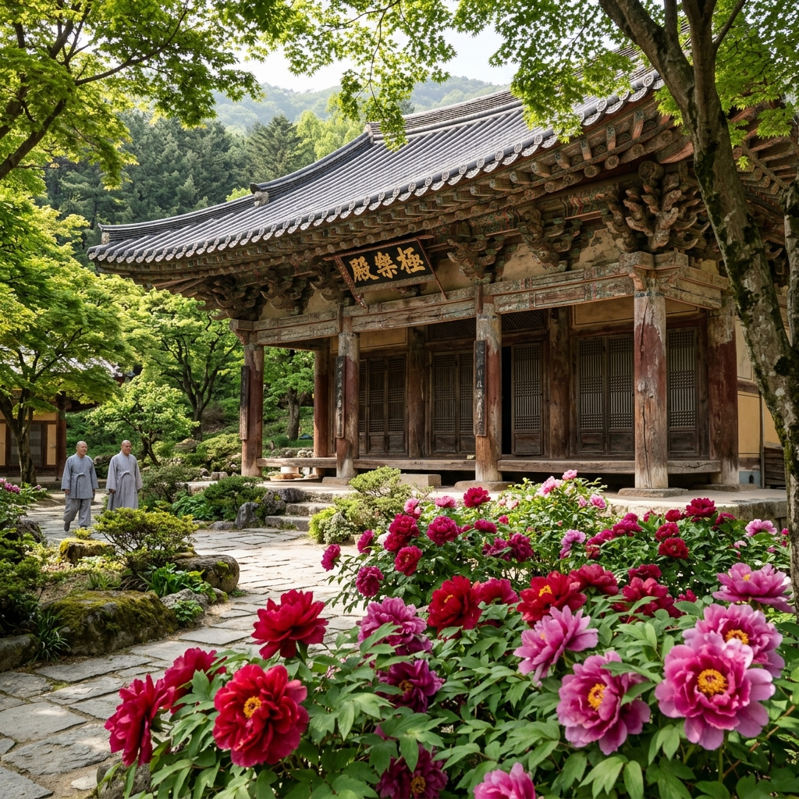
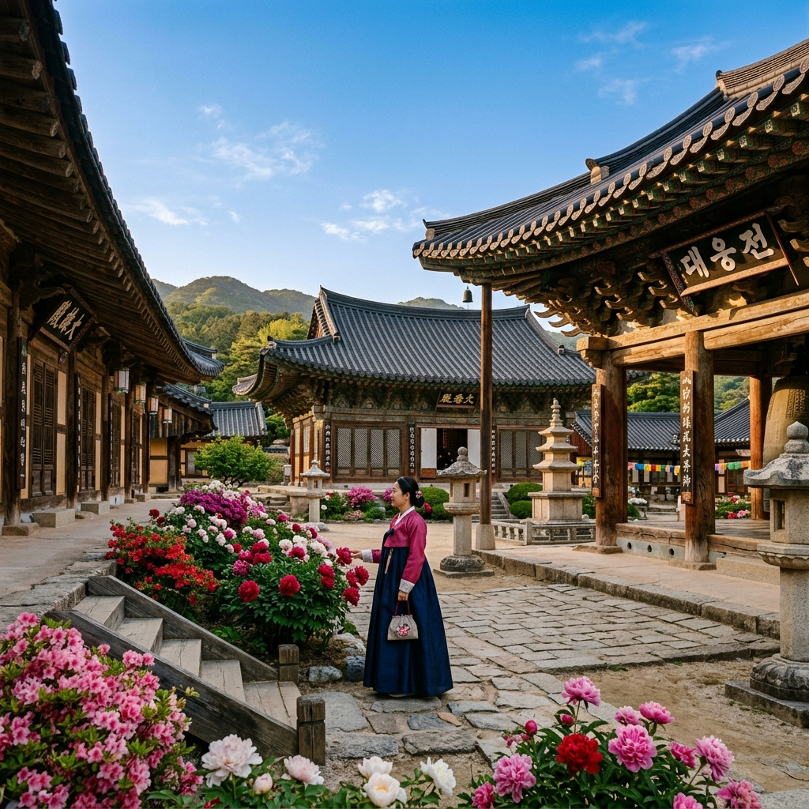

안동 봉정사 모란 2026: 한국 최고(最古) 목조건축 배경 모란 명소 & 하회마을 연계 1박 코스 완벽 가이드
우리나라에서 가장 오래된 목조 건축물이 있는 곳, 안동 봉정사(鳳停寺). 통일신라 시대 의상대사의 제자 능인이 창건했다고 전해지는 이 사찰에는 국보 제15호 극락전(極樂殿)이 자리하고 있습니다. 고려 시대에 건립된 이 건물은 현존하는 한국 최고(最古)의 목조 건축물로 공인받았으며, 1999년 영국 엘리자베스 2세 여왕이 방문해 국제적으로도 유명세를 탔습니다. 그런 봉정사가 매년 5월이면 모란꽃의 화원으로 변신합니다. 극락전과 대웅전 앞 화단에 핀 모란은 천 년의 세월을 품은 건축물과 어우러져 그 어느 곳에서도 볼 수 없는 독특한 풍경을 연출합니다. 하회마을 연계 1박 코스까지 함께 안내해 드립니다.
| 항목 | 내용 |
|---|
| 위치 | 경상북도 안동시 서후면 봉정사길 222 |
| 관람 시간 | 하절기 07:00~19:00 / 동절기 08:00~18:00 |
| 입장료 | 성인 1,500원 / 청소년 1,000원 / 어린이 500원 |
| 모란 개화 예상 | 2026년 5월 5일~17일 (절정 5월 9일~13일 예상) |
| 주차 | 봉정사 무료 공영주차장 (약 80면) / 주말 08:30 이전 도착 권장 |
🌸 1. 봉정사 모란 — 한국 최고(最古) 건축과 꽃의 만남
봉정사가 다른 사찰의 모란 명소와 차별화되는 이유는 배경이 되는 건축물의 역사적 무게 때문입니다. 극락전(極樂殿)은 고려 시대(약 12세기 초)에 건립된 것으로 추정되며, 1972년 해체 수리 공사 중 발견된 상량문(上樑文)에 기록된 중수(重修) 연대를 역추산해 현재 한국에서 가장 오래된 목조 건물로 인정받고 있습니다.
이 극락전 앞뜰에 모란이 피어나면, 세월의 풍화로 군데군데 빛이 바랜 단청 문양과 선명한 붉은 모란이 대비를 이루며 독특한 미감을 만들어냅니다. 단순히 아름다운 꽃 풍경이 아니라, 살아있는 역사와 살아있는 꽃의 대화처럼 느껴집니다. 봉정사 경내는 전체적으로 안동 천등산(天燈山) 자락에 포근히 안겨 있어 소란스럽지 않고, 새소리와 바람 소리만이 가득한 고요한 분위기를 자랑합니다. 관광지화된 사찰들과 달리 이곳은 여전히 수행 공동체로서의 정체성을 유지하고 있어, 방문객들은 자연스럽게 목소리를 낮추고 조심스러운 걸음으로 경내를 둘러보게 됩니다.
모란 개화 시기의 봉정사는 사진 촬영의 성지이기도 합니다. 극락전 정면을 배경으로 피어난 모란을 담으면 마치 고려 시대 불화(佛畵)의 한 장면 같은 사진이 나옵니다. 입소문을 타고 매년 꽃 사진 동호회 회원들이 단체 방문을 하고 있으며, 주말에는 삼각대를 세워 놓고 골든 아워를 기다리는 사진가들의 모습이 자연스러운 풍경 중 하나가 되었습니다.

[안동 봉정사 극락전과 모란] / AI 제작 이미지
🗓 2. 2026년 봉정사 모란 개화 현황 & 방문 전략
2026년 경북 북부 내륙 지역의 봄 기온은 예년보다 약간 낮게 유지되고 있어 모란 개화가 3~5일 지연되는 양상입니다. 봉정사는 해발 약 480m의 천등산 중턱에 위치해 안동 시내보다 기온이 2~3℃ 낮기 때문에, 시내 공원의 모란이 피기 시작한 뒤 4~5일 후에 경내 모란이 만개하는 패턴을 보입니다.
방문 전 개화 상황을 확인하는 방법을 안내드립니다. 안동시청 문화관광과(☎ 054-840-3421) 또는 봉정사 종무소(☎ 054-853-4181)에 직접 전화해 현재 개화 상태를 문의할 수 있습니다. 또한 안동 지역 맘 카페나 여행 커뮤니티에서는 방문객들이 실시간으로 개화 사진을 공유하므로, 출발 전날 검색해 보시면 가장 정확한 현황을 파악할 수 있습니다.
방문 시간대별 특성을 정리해 드립니다. 오전 7시~8시는 아침 이슬과 새소리가 있는 황금 시간대로, 사진 촬영에 최적입니다. 오전 9시~11시는 개인 방문객들이 서서히 몰리기 시작하지만 여전히 여유롭습니다. 오전 11시~오후 2시는 관광버스 단체 방문객이 집중되는 혼잡 시간대입니다. 오후 4시~일몰은 서쪽으로 기우는 햇살이 만드는 황금빛 역광 효과로 또 다른 촬영 명소가 됩니다.
⛩ 3. 봉정사 경내 핵심 관람 코스 — 국보·보물의 향연
봉정사 경내에는 국보 2점(극락전·대웅전), 보물 4점이 집중되어 있어 모란 구경과 함께 우리나라 최고 수준의 문화재를 한자리에서 감상할 수 있습니다. 권장 관람 순서는 다음과 같습니다.
① 일주문(一柱門)과 천왕문: 입구에서 완만한 오르막 숲길을 10여 분 걸어 올라가면 천왕문이 나옵니다. 이 숲길은 봉정사의 진입 동선 중 가장 아름다운 구간으로, 편백나무와 참나무 사이로 스며드는 5월의 햇살이 초록 빛 터널을 만들어냅니다. ② 만세루(萬歲樓): 경내 진입을 알리는 2층 누각으로, 조선 시대 강당으로 활용되던 공간입니다. 아래를 통과하면 마당이 펼쳐지며 바로 앞에 대웅전이 보입니다. ③ 대웅전(大雄殿): 국보 제311호. 1363년 재건된 건물로, 전면 3칸의 단정한 외관에 비해 내부 불단의 화려한 닫집 장식이 인상적입니다. ④ 극락전(極樂殿): 국보 제15호. 봉정사의 상징이자 한국 최고(最古) 목조 건축물. 정면에서 바라보면 좌우 화단에 모란이 심어져 있어 꽃과 건축의 조화를 감상할 수 있습니다. ⑤ 화엄강당(華嚴講堂) 뒤뜰: 극락전 뒤편의 화엄강당 주변은 방문객이 비교적 적어 모란을 조용히 감상하기에 좋습니다.
📸 4. 모란 포토존 & 사진 구도 가이드
봉정사 모란 사진 촬영 명소는 크게 세 곳으로 나뉩니다. ①극락전 정면 화단: 극락전 돌계단 왼편에 10여 그루의 모란이 집중 식재되어 있습니다. 극락전 정면을 배경으로 잡을 때는 해가 동쪽에 있는 오전 시간대가 건물의 입체감이 살아나 가장 좋습니다. ②대웅전 좌측 담장 길: 대웅전 왼쪽 측면을 따라 걸으면 담장 아래 줄지어 심어진 모란들과 기와 지붕이 함께 담기는 뷰 포인트가 있습니다. 스마트폰보다 광각 렌즈가 탁월한 구도를 만들어내는 구간입니다. ③만세루 아래에서 바라보는 앵글: 만세루 아래를 통과하면서 정면으로 대웅전과 모란을 동시에 담을 수 있는 프레이밍(Framing) 구도를 잡을 수 있습니다. 이 각도는 고건축 사진 전문가들이 즐겨 사용하는 구도로, 목조 기둥이 자연스러운 액자 역할을 합니다.
인물 사진을 원하신다면, 극락전 앞 돌계단에 앉아 모란밭을 배경으로 찍는 구도가 가장 자연스럽습니다. 한복 착용 방문객이라면 대웅전 처마 아래에서 아래를 내려다보는 앵글로 한 컷을 남기면 시대를 초월한 듯한 분위기가 납니다. 단, 사찰 예절상 내부 불단 촬영은 금지이며, 스님이나 수행자가 이동하는 모습을 무단으로 촬영하지 않도록 주의해 주세요.

[봉정사 대웅전 모란 포토존] / AI 제작 이미지
🏘 5. 안동 하회마을 연계 코스 — 유네스코 세계유산 탐방
봉정사에서 차로 약 30분 거리에 있는 안동 하회마을은 2010년 경주 양동마을과 함께 유네스코 세계문화유산으로 등재된 국보급 민속 마을입니다. 낙동강이 마을을 감싸 안으며 흐르는 독특한 지형(河回, 물이 돌아 흐름) 덕분에, 홍수나 외침으로부터 마을을 보호했다고 합니다. 풍산 류씨 가문이 600여 년간 집성촌을 이뤄온 이곳은 조선 시대 양반 문화의 살아있는 박물관입니다.
하회마을 방문 시 꼭 들러야 할 명소를 정리해 드립니다. 양진당(養眞堂)은 보물 제306호로, 류성룡의 형 류운룡이 거처했던 겸재(謙齋) 집으로 하회에서 가장 오래된 살림집입니다. 충효당(忠孝堂)은 보물 제414호로, 임진왜란의 명재상 류성룡이 살았던 집으로 그의 저서 <징비록(懲毖錄)>을 비롯한 유물이 보관되어 있습니다. 하회별신굿 탈놀이는 유네스코 무형문화유산으로, 매주 수·금·토·일요일 오후 2시(3~11월)에 하회세계탈박물관 앞 야외 공연장에서 무료로 관람할 수 있습니다.
🌙 6. 안동 1박 추천 일정 & 숙박 정보
봉정사 + 하회마을을 충분히 즐기려면 1박 일정을 적극 권장합니다. 안동에는 다양한 숙박 시설이 있으며, 특히 하회마을 내 고택 민박은 단순한 숙박을 넘어 조선 시대 양반 가옥에서 하룻밤을 보내는 특별한 경험을 제공합니다. 북촌댁, 남촌댁 등 고택 민박 시설은 사전 예약이 필수이며, 성수기에는 2~3개월 전 예약이 마감되기도 합니다.
📋 안동 1박 2일 추천 일정
[1일차]
· 오전 7시: 봉정사 도착 (모란 감상 + 경내 관람, 약 2시간)
· 오전 10시: 풍기 인삼시장 쇼핑 (차로 약 40분)
· 오후 12시: 안동 시내 안동찜닭 골목 점심
· 오후 2시: 하회마을 탐방 (3~4시간)
· 오후 5시: 부용대(芙蓉臺)에서 낙동강과 하회마을 전경 감상
· 저녁: 안동구시장 간고등어 정식 + 고택 민박 체크인
[2일차]
· 오전: 도산서원(陶山書院) 탐방 (안동에서 차로 약 40분)
· 오후: 월영교 산책 + 안동댐 주변 드라이브
· 귀경
🚗 7. 가는 길 & 교통 정보
안동 봉정사는 경상북도 안동시 서후면에 위치합니다. 주요 도시에서의 접근 방법을 정리해 드립니다. 서울에서는 중앙고속도로 → 서안동IC 하차 후 국도 5호선 → 지방도를 이용하며 약 3시간이 소요됩니다. 서울 센트럴시티 터미널에서 안동 시외버스터미널까지 고속버스가 약 2시간 40분 간격으로 운행(소요 시간 약 2시간 50분)하며, 터미널에서 봉정사까지는 택시(약 20분, 1만 5천원 내외) 또는 시내버스(54번 버스, 약 50분)를 이용할 수 있습니다. 대구에서는 경부·중앙고속도로 → 남안동IC 경유로 약 1시간 20분 거리입니다.
봉정사 공영주차장은 무료이며 약 80면 규모입니다. 주차장에서 봉정사 일주문까지 숲길을 약 10분 걸어 올라가야 합니다. 이 오르막길이 부담스러운 분들(어르신, 유아 동반)을 위해 별도의 경사로가 정비되어 있으니 안내 표지판을 따라가시면 됩니다.
🍖 8. 안동 대표 음식 & 맛집 가이드
안동에는 전국적으로 유명한 향토 음식이 몇 가지 있습니다. 그 중에서도 꼭 경험해야 할 두 가지를 소개해 드립니다. 안동찜닭: 안동 구시장 닭골목에서 시작된 이 음식은 닭 한 마리를 통째로 써서 당면·감자·채소와 함께 간장 양념에 오래 조린 요리입니다. 달콤하고 짭조름한 소스가 굵은 당면에 배어들어 밥 한 공기가 금방 비워집니다. 안동 시내 찜닭 골목에는 수십 개의 식당이 있으며, 1인분(소, 약 2인 기준) 가격은 2만 5천~3만 원 수준입니다. 안동 간고등어: 내륙인 안동에서 고등어를 오래 먹기 위해 소금에 간을 하여 유통하던 것이 오늘날 안동 특산품이 되었습니다. 선선한 소금기가 고등어 특유의 기름진 맛을 더욱 부각시켜, 밥 한 공기를 뚝딱 해치우게 만드는 힘이 있습니다. 안동 구시장 내 간고등어 판매 가게에서 1마리(약 400g 기준) 5,000~7,000원에 구입해 직접 구워 먹거나, 식당에서 간고등어 정식(1만 원 내외)을 즐길 수 있습니다.
💡 9. 여행 준비물 & 꿀팁 총정리
봉정사 + 하회마을 + 안동 시내를 아우르는 여행을 준비할 때 챙겨야 할 사항들을 정리해 드립니다. 봉정사 경내는 대체로 평탄하지만 입구 오르막길이 10분 정도 이어지므로 편한 신발은 필수입니다. 하회마을은 맨땅과 돌길이 혼재하므로 구두보다 운동화를 추천드립니다. 5월 안동 날씨는 낮 최고 기온이 22~26℃, 아침저녁은 13~16℃로 일교차가 10℃ 이상 납니다. 얇은 겉옷 하나를 가방에 챙겨가시면 아침 봉정사 방문과 저녁 하회마을 산책을 모두 편안하게 즐길 수 있습니다.
💡 안동 봉정사 모란 여행 꿀팁
① 봉정사 경내는 야외 화장실이 일주문 안쪽에 1개뿐이므로 주차장 화장실을 미리 이용하세요.
② 하회마을 주차장(유료, 약 4,000원)에서 마을 입구까지 도보 약 10분이 소요됩니다. 단체 방문 시 셔틀버스(유료)를 이용할 수 있습니다.
③ 안동 하회 별신굿 탈놀이는 무료이므로 일정에 반드시 포함하세요. 1시간 공연이지만 해학과 풍자로 가득해 어른과 아이 모두 즐길 수 있습니다.
#안동봉정사
#봉정사모란
#모란꽃2026
#극락전
#안동여행
#하회마을
#유네스코세계유산
#경북여행
#5월꽃여행
#안동찜닭